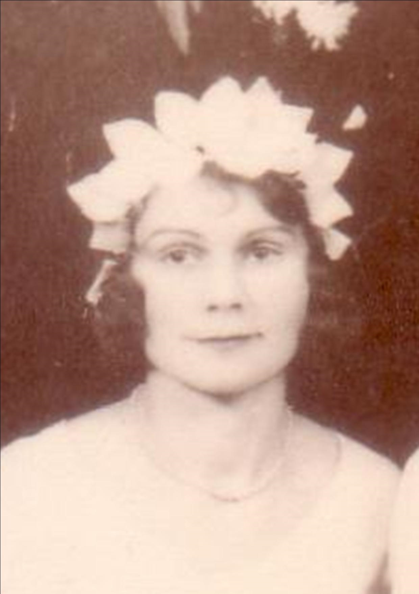
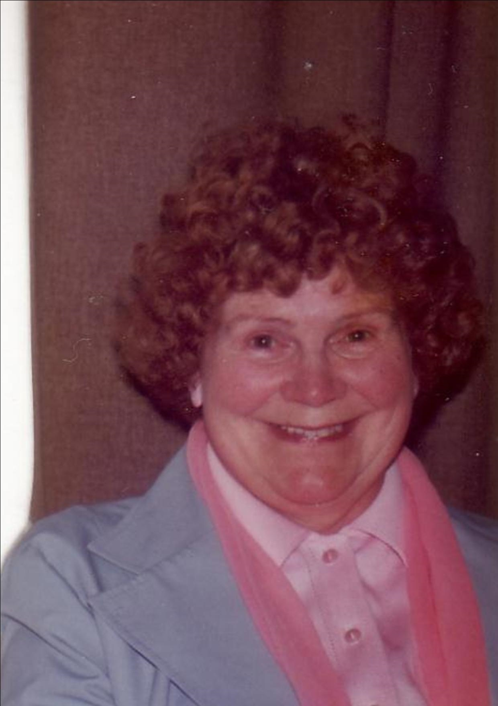
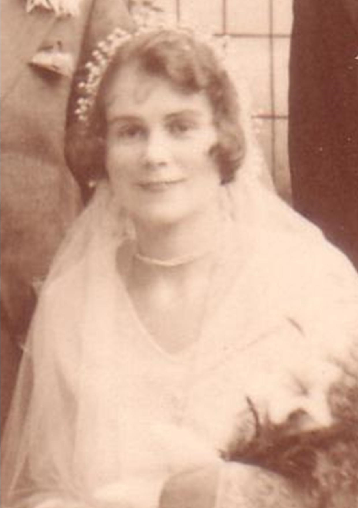
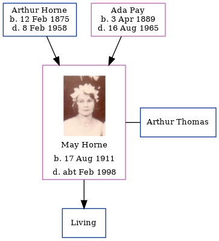

May Winifred Thomas (née Horne) 1911 - c1998
[ Home ] | [ Calendar ] | [ Surnames Index ] | [ Errors ] | [ Family History ]The child of Arthur Horne (a smack owners's assistant) and Ada Pay, May Horne, the second cousin twice-removed on the father's side of Nigel Horne, was born in Thanet, Kent, England on 17 Aug 19111,2,3, was baptised in Ramsgate, Kent, England on 10 Sept 1911. She married Arthur Thomas (with whom she had 1 surviving child, ) St Lawrence in Thanet on 16 Dec 19335. On 19 Jun 1921, she was living at 12 King Edward Road in Ramsgate1 - less than a mile from her aunt Rosa Horn, sister Doris Horne, brother Arthur Horne, brother John Horne and mother Ada Pay who were living at 77 Hardres Street in Ramsgate and her first cousin once-removed on her father's side Henry William who was living at 29 Sussex Street in Ramsgate -.
She died c. Feb 1998 in Thanet4.
Parents
- Arthur Albert was born on 12 Feb 1875
- Ada Caroline Eleanor was born on 3 Apr 1889
Citations
- 1921 Census Of England & Wales - Findmypast (was age 9 and the daughter of the head of the household)
- England & Wales births 1837-2006 - Findmypast
- Kent, Canterbury Archdeaconry baptisms 1538-1912 - Findmypast
- England & Wales deaths 1837-2007 - Findmypast
- England & Wales marriages 1837-2008 - Findmypast
Media
May Winifred Horne

May Winifred Horne - 2

May Winifred Horne - 3

England & Wales births 1837-2006 - BMD/B/1911/3/AZ/000679/080
Kent, Canterbury Archdeaconry baptisms 1538-1912 - GBPRS/CANT/B/96524880
England & Wales marriages 1837-2008 - BMD/M/1933/4/AZ/000597/094
England & Wales deaths 1837-2007 - BMD/D/1998/2/82829161
Family Tree
Map
Generated by ged2site. Last updated on Jul 3, 2024
Known Issues
1939 UK register information missing